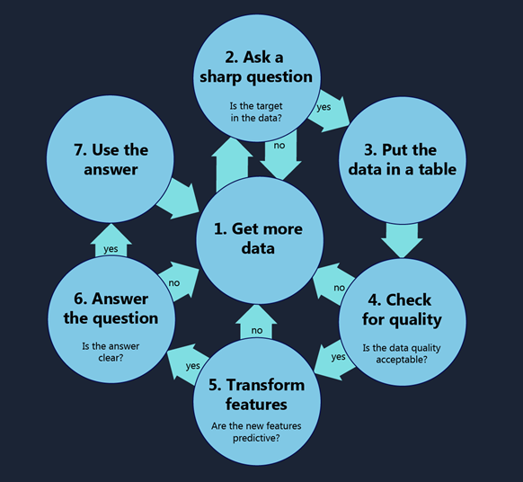

In a previous post I advised data scientists in training to build stuff. This post gets more specific. Here's what I mean when I say I'm doing data science.
1. Get More Data
The raw stuff of data science is a collection of numbers and names. Measurements, prices, dates, times, products, titles, actions—everything is fair game. You can use images, text, audio, video and other complex data too, as long as you have a way to reduce it to numbers and names.
The mechanics of getting data can be quite complex. Data engineers are ninjas. But this guide is focused on the data science, so I’ll leave that topic for another time.
2. Ask a Sharp Question
Data science is the process of using names and numbers to answer a question. The more precisely you ask your question the better chance you have of finding an answer you are satisfied with. When choosing your question, imagine that you are approaching an oracle that can tell you anything in the universe, as long as the answer is a number or a name. It’s a mischievous oracle, and its answer will be as vague and confusing as it can get away with. You want to pin it down with a question so airtight that the oracle can’t help but tell you what you want to know. Examples of poor questions are “What can my data tell me about my business?”, “What should I do?” or “How can I increase my profits?” These leave wiggle room for useless answers. In contrast, clear answers to questions like “How many Model Q Gizmos will I sell in Montreal during the third quarter?” or “Which car in my fleet is going to fail first?” are impossible to avoid.
Now that you have a question, check to see whether you have examples of the answer in your data. If your question is “What will my stock’s sale price be next week?” then make sure your data includes your stock’s price history. If your question is “How many hours until a model 88 aircraft engine fails?” then make sure your data includes failure times of several model 88 engines. These examples of answers are called your target. Your target is the quantity or category that you want to predict or assign in the future. If you don’t have any target data, go back to Step 1 and Get More Data. You won’t be able to answer your question without it.
3. Put the Data in a Table
Most machine learning algorithms assume your data is in a table. Each row is one event or item or instance. Each column is one feature or attribute of all those rows. A data set describing American football might have each row represent a game with columns for home_team, visiting_team, home_team’s_score, visiting_team’s_score, date, start_time, attendance and so on. The columns can be arbitrarily detailed and there can be as many as you like. The football data set could even include a column as detailed as yards_rushed_by_the_home_team_during_the_final_two_minutes_of_the_first_half.
Choose Your Rows
There are lots of ways to break a data set into rows, but only one way will help you answer your question: each row needs to have one and only one instance of your target. Consider data gathered from a retail store. It could be condensed to one transaction per row, one day per row, one store per row, one customer per row, and many other row representations. If your question is “Will a customer return for a second visit?” then one customer per row is the right way for you to organize it. Your target, whether_the_customer_returned, applies once and only once to each individual and will be present on each row. That wouldn’t happen if there were one store per row or one day per row. If you end up with a single target column across all your rows, then you know you chose the right row representation.
You may have to roll some data up to get it to fit. For instance, if your question is “How many lattes will I sell per day?” then you’ll want one day per row in your table, with a target column of number_of_lattes_sold. But your data may be recorded as a list of latte sales transaction with the time and date of each. In order to fit this into a one-day-per-row format, it is first necessary to roll up the data, that is, to combine a bunch of measurements into a single one. In this case, it means counting up the number of lattes sold on each date. Other information, such as the time each latte was sold, is lost in this process, but that’s OK. That data wasn’t going to help you answer your question.
4. Check for Quality
Inspection
The next step is to take a careful walk through the data. This has two purposes. The first is to spot any poor data and fix or remove it. The other is to become intimately familiar with each row and column. You cannot skip this step and expect to get the most out of your data. If you show your data love, it will love you back.
Look at just one column of data. What is it labeled? Do the values fit the label? Does the label mean anything to you? Is there documentation on what the column means? On how it was measured? On who measured it? If you’re lucky enough to know the person who recorded it, take them out for a donut and ask them how they measured it. Ask them for funny stories about what went wrong. Your investment in pastry will be repaid many times over.
Now plot the column as a histogram. Does the distribution fit what you know about the feature? Are there an unusual number of outliers? Do the outliers make physical sense? If you are looking at longitude of agricultural plots, do some of them lie in the Pacific Ocean? If you are looking at test scores, is there a cluster at one percent? Ten thousand percent? Use everything you know about where the data came from and subject the values to a sniff test. If they seem a little off in any way, find out why.
Correction
While walking through the columns, you may find that the labels and documentation were misleading or incorrect. Make sure to write down what you learned about them. At this point you probably know the data better than anyone except the person that recorded it. Share your knowledge.
You may also find that some of the values are just wrong. The value may be outside the range of possibilities, such as a person 72 meters tall, or it might be highly unlikely, like an address of “7777777777 Main St”. When this occurs, you have three choices. You can try to correct the value, if the correction seems obvious (for instance, converting 72 meters of height to 72 inches). If the correction isn’t obvious, you can delete the value and leave it as missing. Alternatively, if the value is a critical piece of information, you can remove the entire row or column. This will keep you from training a model on erroneous data. Wrong data is far more damaging than missing data.
There can be a temptation here to remove values or rows that are undesirable. They might be surprising or may not support your favorite theory. Don’t do this. It’s unethical and, worse, it will get you the wrong answer.
Replacing Missing Values
In almost every data set there are missing values. Sometimes they were found to be erroneous and deleted. Sometimes you start measuring a new variable halfway through the experiment. Sometimes the data came from different sources that measured different things. Whatever the case, most machine learning algorithms either require that data have no missing values, or else they fill in any missing values in a naïve way. You can do better than them, because you understand your data.
There are lots of methods for replacing missing values. If you’d like to see a sampling check out this Azure Machine Learning experiment. The bottom line is that the best thing to do will depend on what each column means and what it means when one of those values is missing. It will be a little different for every data set.
After you’ve replaced all your missing values, your data is “connected”. Every data point has a value for every feature. It is clean and ready to go to work on. Occasionally you may discover that after cleaning, you have little or no data left. This is a good thing. You just saved yourself the pain of building a model with bad data, getting a wrong result, getting laughed at by your customers and disgruntling your boss. Go back to Step 1 and Get More Data.
5. Transform the Features
Before jumping into machine learning, one step remains: feature engineering. This just means that you take the features you have and creatively combine them so that they better predict your target. For instance, in this example train arrival and departure times are subtracted to get transit duration. This proved much more useful for predicting the target, peak speed.
Strictly speaking, feature engineering doesn’t add any information to the data. It is simply combining what’s there in a new way. However, there are infinitely many ways to combine even two columns of data. Most of these won’t be meaningful or help predict the target. Choosing a good one usually requires knowledge about the world. It’s a way that you can fold your knowledge about the problem into the data and stack the deck in your favor.
The process of feature engineering is the darkest of data science arts. There is no principled way to automatically choose the best derived features. It’s a process of trial and error, intuition and experience. All of deep learning is an attempt to automate this process. For all its successes, deep learning is finicky and still has spectacular failures. Arguably the special sauce of human intelligence is the ability to automatically create features from a large number of rods, codes and Pacinian corpuscles.
Even if you haven’t yet achieved the rank of feature engineering black belt, there is a trick you can use. Color code your target and plot it against every pair of variables you have. This will help expose sneaky relationships between variables. This may generate a lot of plots, but take the time to look through all of them. Each time you see a pattern in these two-features-by-target plots, that’s a feature engineering opportunity. It tells you that the combination of those two variables may be more helpful than the two variables in isolation.
There’s a lot more to be said about feature engineering. I hope to return to it soon and add links to the discussion here.
Sometimes you’ll discover that none of your variables or combinations of variables help predict your target. This probably means that you need to measure something else. Go back to Step 1 and Get More Data.
6. Answer the Question
Finally you get to the data scientists’ favorite part. Machine learning! There are lots of resources available on this and I won’t try to summarize them all here. Very briefly, you have to decide what algorithm family your question belongs to, choose one or more algorithms within that family to use and then turn the crank, using the traditional machine learning techniques of splitting the data into training, tuning, and testing data sets and optimizing the parameters on whichever model(s) you pick.
If your model doesn’t answer your question well or you would like to avoid doing machine learning, there are a couple non-traditional ways to answer your question.
The first of these is to simply look at pictures of your data. Half the time, visualizing your data gives you the answer you are looking for. If your question is “What will the high temperature be in Boston on July 4 next year?” then looking at a histogram of high temperatures in Boston on July 4 for the past 100 years gives a visual answer that will be sufficient for most purposes. Two dimensional heatmaps are particularly effective at combining two features with a target in a way that is easy for our visual system to interpret and remember.
The second of these is more technically demanding. If your results are unsatisfying because your data set is too small, you can deviate into the realm of optimization. This is a deep topic that I plan to return to in more detail. For now I’ll leave a teaser. Machine learning algorithms boast weak priors, that is, they make weak assumptions about the structure of the data. The upside of this approach is that you aren’t required to know much about your data before using the algorithms. They can learn a broad class of models. The downside is that it takes a lot of data to get a confident answer. An alternative to this is to make more assumptions about your data—to incorporate what you know about the world into your assumptions.
For example, if you want to predict the ballistic trajectory of an object you can collect data on lots of objects in freefall and train a machine learning algorithms on them. Alternatively, you can use what you know about Newtonian physics to create a richer model. Then, a single data point that includes position and velocity is enough to predict the position and velocity of the object at every point in the future. The risk of this approach is that your assumptions aren’t exactly correct, but the strength is that you can get by with far less data.
If none of these methods work for you, it is probably a sign that you need to collect more data or rethink what you are measuring. Go back to Step 1 and Get More Data.
7. Use the Answer
No matter how well you use your data to answer your question, your job isn’t done until it a person uses it. Put it in a form that someone can use to either make a decision, complete a task or learn something they didn’t know. There are lots of ways to do this. Publish results plots on a web page. Write a PDF describing the features you found most useful. Share your code on GitHub. Make a video sharing your conclusions with a business audience. Generate a beautiful visualization and Tweet it. Spin up a web service that applies your model to new data points. Whatever you do, get your work into the hands of another human. If a tree falls in the forest and no one is around to hear it, it might still make a sound, but if you build a brilliant model and no one sees it, it will certainly not get you a raise.
Then start over. Go back to Step 1 and Get More Data.
Brandon
March 28, 2016
Follow me on Twitter or connect with me on LinkedIn
I work at Microsoft, but my opinions are my own. This post was originally published on Microsoft's Cortana Intelligence and Machine Learning Blog.